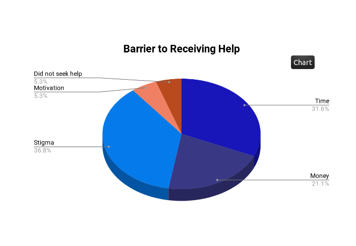

Online Resources for Mental Health
In times of crisis (and specifically mental health crises), it can be overwhelming for students to know what their options are. Using a Virginia Tech-wide survey, the study populace was asked a series of questions regarding their need for mental health services and why, if they needed them, did they not seek help. Additionally, interviews with some of the individuals from the survey, in order to gain a deeper understanding of what students needed to address their mental health concerns.
Methods
Secondary Research Methods
This project began with secondary research. NAMI was found based off a google search of Mental health hotlines. Moreover, through NAMI’s website, a 2012 survey was found. With Google searches like “why do college students not get treated,” and “Mental Health Resources” other articles were found. Following the primary research, we complemented the findings with more secondary research which was found through the Virginia Tech library.
Survey Methods
The survey was designed to be as simple and straightforward as possible. We kept it short, and had simple questions in order to maimize our response rate. We wanted as many responses as possible, and in order to do that, we made it clear that the survey was anonymous, and every question was optional.
Interview Methods
Within our survey, we gave an opportunity for survey takers to give their email addresses if they wanted to have a followup dicussion regarding their experiences. 2 Interviews were conducted, and they were conducted in a way to allow the interviewee to fully express their opinions.
Findings
Secondary Research Findings
Mental health issues are more common than we may think. Sources such as the National Alliance on Mental Illness and The Virginia Department of Behavioral Health and Developmental Services provide resources for which people can use if they need help. UCLA examines different colleges and universities to see if there are things that affect how many students seek help. At Virginia Tech, there have been issues with accessibility of counseling services.
Survey Findings
Everyone surveyed stated that either they or someone they knew suffered from mental health issues. A majority of those affected by mental health issues have seeked help, but there is still a large percentage that do not seek help. Many people who have not seeked help have been hesitant because of social stigma, a lack of time, and/or a lack of money. Suggested ways to encourage people to seek help have been along the lines of reducing the stigma, and to make counseling more accessible. 
Interview Findings
Interviewees have stated that there is a stigma towards seeking mental health resources. The stigma of seeking help is that the person may seem weak or inferior. An online therapy service called "BetterHelp.com", supplemented with counselors from Cook Counseling can provide to be useful.
Conclusion
Mental health issues are more common than people think. Most college students all over the United States have either experienced or known someone that has experienced mental health issues. The common obstacles that prevent students from getting help are the social stigma, lack of time, and lack of money.
There are many online resources that people can use to get help in a very short time. Such resources include mental health hotlines, which are usually working 24/7.
Resources
-
American Foundation for Suicide Prevention
Community that offers a community to those affected by suicide
-
2-1-1
Nationwide service that connects people to help
-
BetterHelp
Online therapy service
-
Suicide Prevention Lifeline
Mental health hotline available 24/7